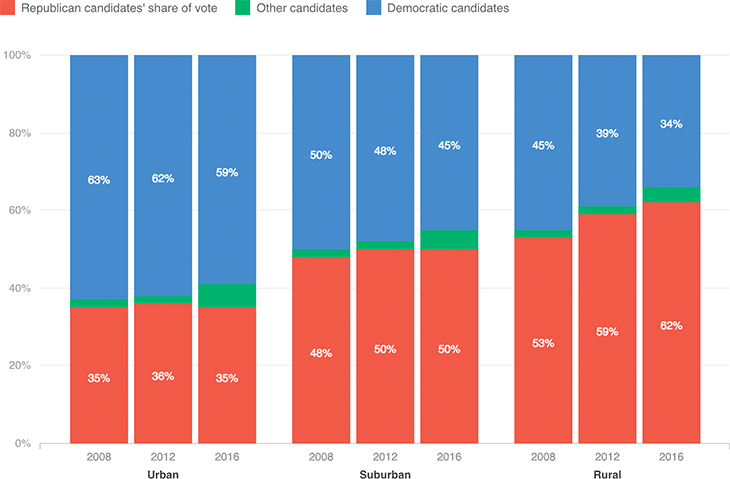

Rural Voters Have Shifted Strongly Toward Republicans
According to exit polls, support for GOP presidential candidates among urban and suburban voters has held steady since 2008, and support for Democrats has dropped slightly in those places. But in rural areas, Republican gains and Democratic losses have both been considerably larger.
